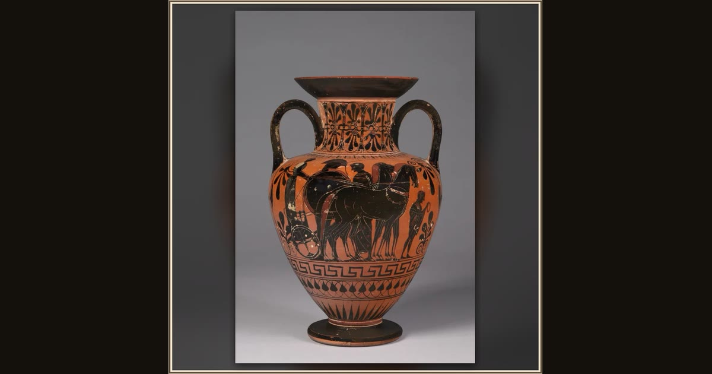

Black-Figure Neck-Amphora (Storage Vessel): Departing Warrior with Chariot (A); Battling Warriors (B)
Greek, Attic · c. 520–510 BCE · cma
An Athenian black-figure jar shows a warrior with shield beside a chariot and team of horses, the kind of car the wounded Agamemnon leaps into to be driven back to the ships (273). Explore its place in Homer's Iliad, Book XI, line 273.